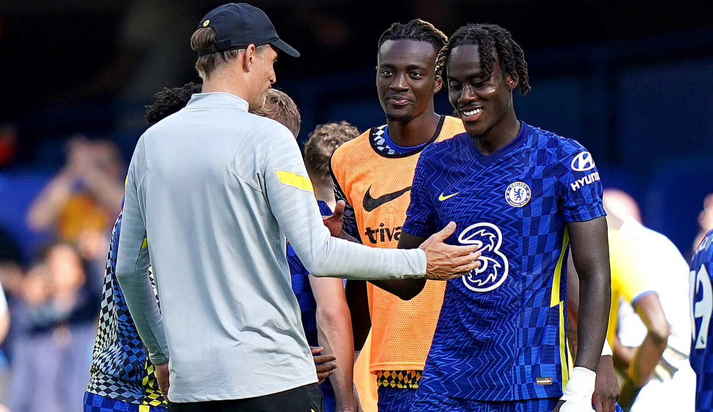

TREVOH CHALOBAH
TREVOH CHALOBAHเขาไต่ชั้นขึ้นมาเรื่อย ๆ และได้ขึ้นไปเล่นฟุตบอลระดับซีเนียร์เมื่อปี 2018 โดยถูกปล่อยยืมไปให้อิปสวิช ทาวน์ แม้ว่าทีมจะตกชั้น แต่ชาโลบาห์ก็ทำผลงานได้อย่างน่าประทับใจและถูกปล่อยไปเล่นให้ฮัดเดอร์สฟิลด์ ทาวน์ตลอดฤดูกาล 2019/20
ปี 2020 ชาโลบาห์ ย้ายไปค้าแข้งในต่างประเทศเป็นครั้งแรก โดยตกลงร่วมทัพ ลอริยองต์ ทีมน้องใหม่ของลีก เอิง เขาได้เล่นทั้งปราการหลังตัวกลางและมิดฟิลด์ ซึ่งฟอร์มที่ดีของ ชาโลบาห์ ได้เตะตาใครหลายคน โดยรวมแล้วเขาลงสนาม 30 นัด ยิง 2 ประตูช่วยให้ลอริยองต์รักษาสถานะในลีกสูงสุดของประเทศฝรั่งเศสเอาไว้ได้
ในการกลับสู่เชลซี กองหลังรายนี้โชว์ฟอร์มน่าประทับใจช่วงพรีซีซั่นในยุคของ โธมัส ทูเคิ่ล และได้ลงประเดิมสนามให้ทีมชุดใหญ่ในการแข่งขันซูเปอร์ คัพ กับบียาร์เรอัลเป็นเวลา 120 นาที สามวันหลังจากนั้น เขาลงสนามนัดแรกในพรีเมียร์ ลีก และยิงประตูสุดสวยช่วยให้พวกเราเอาชนะคริสตัล พาเลซ 3-0
ชาโลบาห์เคยเป็นกัปตันทีมชาติอังกฤษรุ่น U-16 ที่คว้าแชมป์รายการ Montaigu Tournament ในฤดูกาล 2015/16 ต่อมาเขาสวมปลอกแขนกัปตันทีม U-17 ในศึกชิงแชมป์แห่งชาติยุโรปในรุ่นอายุดังกล่าวเมื่อปี 2016 ก่อนคว้าแชมป์ยูโร กับทีมรุ่นอายุไม่เกิน 19 ในปี 2017 ชาโลบาห์ ถูกเรียกติดทีมชาติอังกฤษ U-21 ครั้งแรกสำหรับการแข่งขันฟุตบอลชิงแชมป์แห่งชาติยุโรป รอบคัดเลือกที่พบกับตุรกี และคอซอวอ โดยได้ลงสนามทั้งสองนัด
SOCIAL MEDIA
 |
|